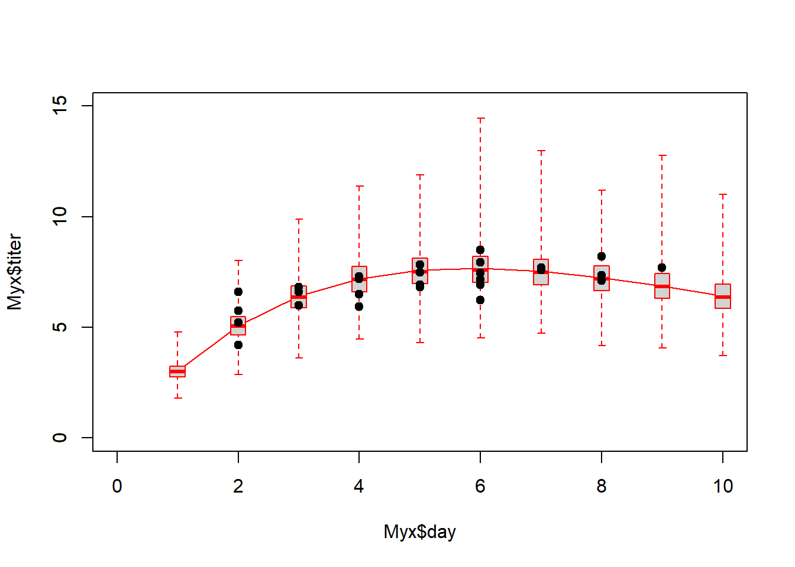
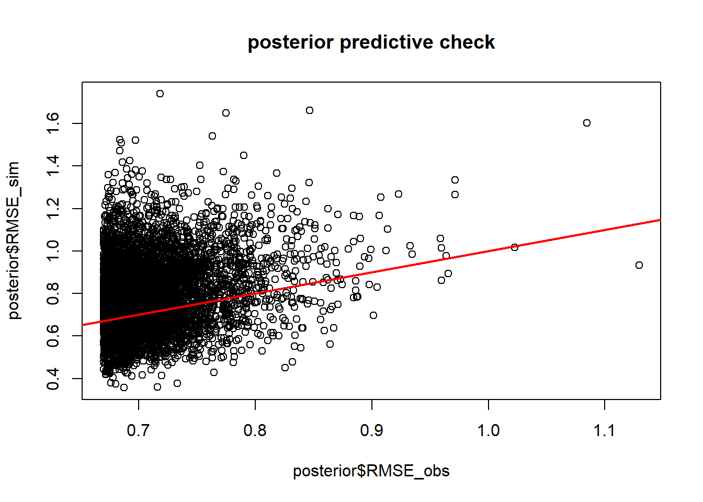

Model Performance Evaluation
NRES 746
Fall 2023
For those wishing to follow along with the R-based demo in class, click here for the companion R script for this lecture.
In this course so far, we have constructed data-generating models and fitted these models to observed data using likelihood-based methods (ML and Bayesian inference). We also have explored a range of methods to account for structural uncertainty (which of a set of candidate models could plausibly have generated our observed data).
But even after we have fitted a model to data, even after we have compared a suite of plausible models and selected the best one, are we really sure that the model is good?
What does it even mean to say that the model is good?
Usually, we mean one or more of the following:
- Goodness-of-fit: The data could easily/reasonably have been generated under the fitted model (the model is adequate)
- Predictive performance: The fitted model performs well at predicting responses for out-of-sample data (the model is useful)
- Generality: The model performs well at extrapolating responses for out-of-sample data that are outside the range of those in the training set (the model is really useful!)
Goodness-of-fit
We have already looked at a variety of methods for evaluating goodness-of-fit. In general, you can use data simulation (virtual ecology) to evaluate whether your fitted model is capable of generating the observed data. In a frequentist/ML context this is often called a parametric bootstrap
Q: What is the difference between a non-parametric bootstrap (usually just called a ‘bootstrap’) and a parametric bootstrap?
For example, we can overlay the observed data (or a model performance statistic like R-squared) on a cloud of points representing the range of data sets (or performance statistics) possibly produced under the fitted model.
Or, we can use a “plug-in” prediction bounds as a substitute for the cloud of data sets possibly produced under the model.
Often, we compare a target summary statistic (e.g., Deviance, RMSE, R-squared) for the observed data with the range of that target summary statistic produced under the inferred, stochastic data generating model.
Let’s return to the Myxomatosis dataset!
library(emdbook)
MyxDat <- MyxoTiter_sum
Myx <- subset(MyxDat,grade==1) #Data set from grade 1 of myxo data
head(Myx)## grade day titer
## 1 1 2 5.207
## 2 1 2 5.734
## 3 1 2 6.613
## 4 1 3 5.997
## 5 1 3 6.612
## 6 1 3 6.810Now let’s use ML to fit the Ricker model with a gamma error distribution.
# Fit the model with ML -----------------------------
Ricker <- function(a,b,predvar) a*predvar*exp(-b*predvar)
NegLogLik_func <- function(params,data){
expected <- Ricker(params[1],params[2],data$day)
-sum(dgamma(data$titer,shape=params[3],scale=expected/params[3],log = T))
}
init.params <- c(a=1,b=0.2,shape=50)
NegLogLik_func(init.params,data=Myx)## [1] 2336.22MaxLik <- optim(par=init.params, fn=NegLogLik_func, data=Myx)
MaxLik## $par
## a b shape
## 3.5614933 0.1713346 90.6790545
##
## $value
## [1] 29.50917
##
## $counts
## function gradient
## 202 NA
##
## $convergence
## [1] 0
##
## $message
## NULLHow might we evaluate goodness-of-fit in this case??
‘Plug-in’ prediction bounds
The simplest way is just to plot the expected value along with “plug-in” bounds around that prediction, to represent the range of data likely to be produced under the model. We have done this before!
# Plug-in prediction interval -------------------------
plot(Myx$titer~Myx$day,xlim=c(0,10),ylim=c(0,15))
expected <- Ricker(MaxLik$par['a'],MaxLik$par['b'],1:10)
points(1:10,expected,type="l",col="green")
upper <- qgamma(0.975,shape=MaxLik$par['shape'],scale=expected/MaxLik$par['shape'])
lower <- qgamma(0.025,shape=MaxLik$par['shape'],scale=expected/MaxLik$par['shape'])
points(1:10,upper,type="l",col="red",lty=2)
points(1:10,lower,type="l",col="red",lty=2)
This gives us a simple and useful way to visualize goodness-of-fit.
Simulated datasets!
Alternatively, we could generate simulated data sets under the best-fit model (parametric bootstrap!):
# Parametric bootstrap! -------------------------------------
plot(Myx$titer~Myx$day,xlim=c(0,10),ylim=c(0,15),type="n")
expected <- Ricker(MaxLik$par['a'],MaxLik$par['b'],1:10)
points(1:10,expected,type="l",col="green")
uniquedays <- sort(unique(Myx$day))
expected <- Ricker(MaxLik$par['a'],MaxLik$par['b'],uniquedays)
simdata <- array(0,dim=c(1000,length(uniquedays)))
for(i in 1:1000){
simdata[i,] <- rgamma(length(uniquedays),shape=MaxLik$par['shape'],scale=expected/MaxLik$par['shape'])
}
upper <- apply(simdata,2,function(t) quantile(t,0.975))
lower <- apply(simdata,2,function(t) quantile(t,0.025))
points(uniquedays,upper,type="l",col="red",lty=2)
points(uniquedays,lower,type="l",col="red",lty=2)
boxplot(x=as.list(as.data.frame(simdata)),at=uniquedays,add=T,boxwex=0.25,xaxt="n",range=0,col="red")
points(Myx$day,Myx$titer,cex=1.5,pch=20)
Using simulated data, we can go further- we can compare the simulated data vs the observed data more quantitatively. For example, we can compute the root mean squared error (RMSE) for the simulated datasets and compare that with the root mean squared error for the observed data.
# Compare observed error statistic with expected range of error statistic as part of parametric bootstrap analysis
expected <- Ricker(MaxLik$par['a'],MaxLik$par['b'],Myx$day)
simdata <- array(0,dim=c(1000,length(Myx$day)))
for(i in 1:1000){
simdata[i,] <- rgamma(length(Myx$day),shape=MaxLik$par['shape'],scale=expected/MaxLik$par['shape'])
}
rmse_observed <- sqrt(mean((Myx$titer-expected)^2))
rmse_simulated <- apply(simdata,1,function(t) mean((t-expected)^2))
hist(rmse_simulated,freq=F)
abline(v=rmse_observed,col="green",lwd=3)So, is this a good model?
Of course, the goodness-of-fit tests you can run with simulated data are limited only by your imagination! Be dangerous!
NOTE: the above methods do not account for parameter uncertainty. This model is the maximum likelihood model- that is, the point estimates are assumed to represent the true model!
If we wanted to account for parameter uncertainty in the ML framework, we could (for example) use profile-likelihood CIs to estimate parameter bounds and we could plug-in bounds that incorporate parameter uncertainty. Or we could treat the CIs for the parameter estimates as a probability distribution (e.g., uniform) and simulate datasets across this range of parameter uncertainty (but what would a frequentist statistician say about this?).
Bayesian!
Accounting for prediction uncertainty is simple in a Bayesian framework… (this is part of lab 4!)
In general, a posterior predictive check involves generating new data sets under the fitted model that are equivalent to the observed data set (i.e., same sample size and covariate values) and comparing with the observed data.
First we need to fit the model in JAGS.
Note that we can write the predictions directly into the JAGS code
# Bayesian goodness-of-fit -------------------------
library(R2jags)
library(lattice)
cat("
model {
#############
# LIKELIHOOD
############
for(obs in 1:n.observations){
expected[obs] <- a*day[obs]*exp(-b*day[obs]) # Ricker
titer[obs] ~ dgamma(shape,shape/expected[obs])
titer.sim[obs] ~ dgamma(shape,shape/expected[obs]) # simulate new data (accounting for parameter uncertainty!
}
#############
# PRIORS
############
shape ~ dgamma(0.001,0.001)
a ~ dunif(0,10)
b ~ dunif(0,10)
#############
# SIMULATED DATA FOR VISUALIZATION
#############
for(day2 in 1:10){
expected.new[day2] <- a*day2*exp(-b*day2) # Ricker
titer.new[day2] ~ dgamma(shape,shape/expected.new[day2])
}
#############
# DERIVED QUANTITIES
#############
for(obs in 1:n.observations){
SE_obs[obs] <- pow(titer[obs]-expected[obs],2)
SE_sim[obs] <- pow(titer.sim[obs]-expected[obs],2)
}
RMSE_obs <- sqrt(mean(SE_obs[]))
RMSE_sim <- sqrt(mean(SE_sim[]))
}
", file="BUGSmod_ricker1.txt")Let’s run the model!
myx.data.for.bugs <- list(
titer = Myx$titer,
day = Myx$day,
n.observations = length(Myx$titer)
)
init.vals.for.bugs <- function(){
list(
shape=runif(1,20,100),
a=runif(1,0.5,1.5),
b=runif(1,0.1,0.3)
)
}
params.to.store <- c("shape","a","b","RMSE_obs","RMSE_sim","titer.new") # specify the parameters we want to get the posteriors for
jags.fit <- jags(data=myx.data.for.bugs,inits=init.vals.for.bugs,parameters.to.save=params.to.store,n.iter=50000,model.file="BUGSmod_ricker1.txt",n.chains = 3,n.burnin = 5000,n.thin = 20 )## module glm loaded## Compiling model graph
## Resolving undeclared variables
## Allocating nodes
## Graph information:
## Observed stochastic nodes: 27
## Unobserved stochastic nodes: 40
## Total graph size: 458
##
## Initializing modeljags.fit.mcmc <- as.mcmc(jags.fit)
posterior <- as.data.frame(jags.fit$BUGSoutput$sims.list)Assuming convergence, let’s move on to the goodness-of-fit part! First, let’s visualize the observed data against the cloud of data that could be produced under this model!
plot(Myx$titer~Myx$day,xlim=c(0,10),ylim=c(0,15),type="n")
expected <- Ricker(mean(posterior$a),mean(posterior$b),1:10)
points(1:10,expected,type="l",col="red")
boxplot(x=as.list(posterior[,7:16]),at=1:10,add=T,boxwex=0.25,xaxt="n",range=0,border="red")
points(Myx$day,Myx$titer,cex=1.5,pch=20)
Looks pretty good so far! Let’s look at another posterior predictive check…
plot(posterior$RMSE_sim~posterior$RMSE_obs, main="posterior predictive check")
abline(0,1,col="red",lwd=2)
p.value=length(which(as.vector(jags.fit.mcmc[,"RMSE_sim"][[1]])>as.vector(jags.fit.mcmc[,"RMSE_obs"][[1]])))/length(as.vector(jags.fit.mcmc[,"RMSE_sim"][[1]]))
p.value## [1] 0.6751111Okay, the fit seems more or less reasonable!
Predictive ability
In many cases, goodness-of-fit is not ultimately what we are most interested in. What we really want to know is whether the model does a good job at predicting the response. Is our model useful in some way?
One way to do this would be for us to focus on an R-squared or pseudo-R2 statistic:
\(R^2 = 1-\frac{SS_{res}}{SS_{tot}}\)
\(PseudoR^2 = 1-(\frac{logLik_{mod}}{logLik_{null}})\)
Let’s compute these metrics for the fitted data:
# Summary statistics of a models "usefulness" (e.g., R-squared) -------------------
SS_res <- sum((Myx$titer-Ricker(MaxLik$par["a"],MaxLik$par["b"],Myx$day))^2)
SS_tot <- sum((Myx$titer-mean(Myx$titer))^2)
Rsquared <- 1-SS_res/SS_tot
cat("R-squared = ", Rsquared, "\n")## R-squared = 0.46578# Fit the null likelihood model!
NegLogLik_null <- function(params){
-sum(dgamma(Myx$titer,shape=params[2],scale=params[1]/params[2],log = T))
}
init.params <- c(mean=7,shape=50)
MaxLik_null <- optim(par=init.params, fn=NegLogLik_null)
McFadden <- 1-(MaxLik$value/MaxLik_null$value)
cat("McFadden's R-squared = ", McFadden) ## McFadden's R-squared = 0.2165806Another way to evaluate model skill, or performance, is to use root mean squared error (RMSE):
\(RMSE = sqrt(mean(residuals^2))\)
RMSE gives a good indicator of the mean error rate, which is often useful and understandable. For example, “the predicted temperature is usually within 1.3 degrees C of the true temperature”…
RMSE = sqrt(mean((Myx$titer-Ricker(MaxLik$par["a"],MaxLik$par["b"],Myx$day))^2))
cat("RMSE = ", RMSE, "\n")## RMSE = 0.6767347So the average error in units of titer (in log10 rabbit infectious doses)
So is our model good???
Does it do a good job at prediction?
Q: Does an over-fitted model have acceptable goodness-of-fit?
Q: Does an over-fitted model have acceptable performance, evaluated as R-squared or RMSE?
Q: Will an over-fitted model perform well when predicting to new samples (that were not used in model fitting)?
Validation
Let’s imagine we collect some new Myxomatosis titer data (for grade 1 virus), and it looks like this:
# Collect new data that were not used in model fitting
newdata <- data.frame(
grade = 1,
day = c(2,3,4,5,6,7,8),
titer = c(4.4,7.2,6.8,5.9,9.1,8.3,8.8)
)
newdata## grade day titer
## 1 1 2 4.4
## 2 1 3 7.2
## 3 1 4 6.8
## 4 1 5 5.9
## 5 1 6 9.1
## 6 1 7 8.3
## 7 1 8 8.8First we might simply visualize the new data against the cloud of data possibly produced under the fitted model…
# Validation #1 -------------------------
plot(Myx$titer~Myx$day,xlim=c(0,10),ylim=c(0,15),type="n",xlab="days",ylab="titer")
expected <- Ricker(MaxLik$par['a'],MaxLik$par['b'],1:10)
points(1:10,expected,type="l",col="green")
expected <- Ricker(MaxLik$par['a'],MaxLik$par['b'],1:10)
simdata <- array(0,dim=c(1000,10))
for(i in 1:1000){
simdata[i,] <- rgamma(10,shape=MaxLik$par['shape'],scale=expected/MaxLik$par['shape'])
}
upper <- apply(simdata,2,function(t) quantile(t,0.975))
lower <- apply(simdata,2,function(t) quantile(t,0.025))
points(1:10,upper,type="l",col="green",lty=2)
points(1:10,lower,type="l",col="green",lty=2)
boxplot(x=as.list(as.data.frame(simdata)),at=1:10,add=T,boxwex=0.25,xaxt="n",range=0,border="green")
points(newdata$day,newdata$titer,cex=1.5,pch=20,col="red")
points(Myx$day,Myx$titer,cex=1.5,pch=20,col="black")
legend("topleft",pch=c(20,20),col=c("black","red"),legend=c("original data","validation data"))Now let’s evaluate the skill of our model at predicting the new data… using our above measures of skill, or performance.
SS_res <- sum((newdata$titer-Ricker(MaxLik$par["a"],MaxLik$par["b"],newdata$day))^2)
SS_tot <- sum((newdata$titer-mean(newdata$titer))^2)
Rsquared_validation <- 1-SS_res/SS_tot
cat("R-squared = ", Rsquared, "\n")## R-squared = 0.46578expected <- Ricker(MaxLik$par["a"],MaxLik$par["b"],newdata$day)
McFadden_validation <- 1-(sum(dgamma(newdata$titer,shape=MaxLik$par["shape"],scale=expected/MaxLik$par["shape"], log = T))/sum(dgamma(newdata$titer,shape=MaxLik_null$par["shape"],scale=MaxLik_null$par["mean"]/MaxLik_null$par["shape"],log=T)))
cat("pseudo R-squared = ", McFadden_validation, "\n")## pseudo R-squared = 0.2275702RMSE = sqrt(mean((newdata$titer-Ricker(MaxLik$par["a"],MaxLik$par["b"],newdata$day))^2))
cat("RMSE = ", RMSE, "\n")## RMSE = 1.144803The above analyses seem to indicate that the model fits the new data well, and that the model is successfully able to explain some of the variation in the new data.
Generality/extrapolation
Imagine we collect some more new data, this time in which titers are measured from day 10 to 16. Let’s see if the model does a good job now!
# Validation #2 ---------------------------
newdata <- data.frame( # imagine these are new observations...
grade = 1,
day = c(10,11,12,13,14,15,16),
titer = c(6.8,8.0,4.5,3.1,2.7,1.2,0.04)
)
newdata## grade day titer
## 1 1 10 6.80
## 2 1 11 8.00
## 3 1 12 4.50
## 4 1 13 3.10
## 5 1 14 2.70
## 6 1 15 1.20
## 7 1 16 0.04As before, let’s first simply visualize the new data against the cloud of data possibly produced under the fitted model…
plot(Myx$titer~Myx$day,xlim=c(0,20),ylim=c(0,15),type="n",xlab="days",ylab="titer")
expected <- Ricker(MaxLik$par['a'],MaxLik$par['b'],1:20)
points(1:20,expected,type="l",col="green")
expected <- Ricker(MaxLik$par['a'],MaxLik$par['b'],1:20)
simdata <- array(0,dim=c(1000,20))
for(i in 1:1000){
simdata[i,] <- rgamma(20,shape=MaxLik$par['shape'],scale=expected/MaxLik$par['shape'])
}
upper <- apply(simdata,2,function(t) quantile(t,0.975))
lower <- apply(simdata,2,function(t) quantile(t,0.025))
points(1:20,upper,type="l",col="green",lty=2)
points(1:20,lower,type="l",col="green",lty=2)
boxplot(x=as.list(as.data.frame(simdata)),at=1:20,add=T,boxwex=0.25,xaxt="n",range=0,border="green")
points(newdata$day,newdata$titer,cex=1.5,pch=20,col="red")
points(Myx$day,Myx$titer,cex=1.5,pch=20,col="black")
legend("topleft",pch=c(20,20),col=c("black","red"),legend=c("original data","new data"))Now let’s evaluate the skill of our model at predicting the withheld data… using our favorite measures of skill, or performance.
SS_res <- sum((newdata$titer-Ricker(MaxLik$par["a"],MaxLik$par["b"],newdata$day))^2)
SS_tot <- sum((newdata$titer-mean(newdata$titer))^2)
Rsquared_validation <- 1-SS_res/SS_tot
cat("R-squared = ", Rsquared_validation, "\n")## R-squared = 0.3208912expected <- Ricker(MaxLik$par["a"],MaxLik$par["b"],newdata$day)
McFadden_validation <- 1-(sum(dgamma(newdata$titer,shape=MaxLik$par["shape"],scale=expected/MaxLik$par["shape"], log = T))/sum(dgamma(newdata$titer,shape=MaxLik_null$par["shape"],scale=MaxLik_null$par["mean"]/MaxLik_null$par["shape"],log=T)))
cat("pseudo R-squared = ", McFadden_validation, "\n")## pseudo R-squared = -0.3697861RMSE = sqrt(mean((newdata$titer-Ricker(MaxLik$par["a"],MaxLik$par["b"],newdata$day))^2))
cat("RMSE = ", RMSE, "\n")## RMSE = 2.196227Interestingly, this example shows a couple things:
1) Models are often not very good at extrapolation.
2) The R-squared isn’t always the best measure of model
performance.
3) The McFadden pseudo-Rsquared can go below 0!
4) It’s really important to evaluate goodness-of-fit in addition to
model performance!
Cross-validation
In many cases, you will not have new data against which to test the model. Cross-validation allows us to test the model anyway. Here is some pseudocode:
- Partition the data into k partitions
- Fit the model, leaving one data partition out at a time
- loop through the partitions.
- for each iteration of the loop, fit the model to all the data EXCEPT
the observations in this partition
- use this new fitted model to predict the response variable for all
observations in this partition
- loop through the partitions.
- Compute overall model performance for the cross-validation!
The most common forms of cross-validation are: (1) leave-one-out (jackknife) and (10-fold)
Let’s go through an example using the Myxomatosis data!
# CROSS-VALIDATION ------------------
# PARTITION THE DATA
n.folds <- nrow(Myx) # jackknife
Myx$fold <- sample(c(1:n.folds),size=nrow(Myx),replace=FALSE)
init.params <- c(a=1,b=0.2,shape=50)
Myx$pred_CV <- 0
for(i in 1:n.folds){
Myx2 <- subset(Myx,fold!=i) # observations to use for fitting
newfit <- optim(par=init.params, fn=NegLogLik_func, data=Myx2) # fit the model, leaving out this partition
ndx <- Myx$fold == i
Myx$pred_CV[ndx] <- Ricker(newfit$par['a'],newfit$par['b'],Myx$day[ndx])
}
Myx$pred_full <- Ricker(MaxLik$par['a'],MaxLik$par['b'],Myx$day)
Myx## grade day titer fold pred_CV pred_full
## 1 1 2 5.207 17 5.037240 5.056415
## 2 1 2 5.734 3 4.964784 5.056415
## 3 1 2 6.613 21 4.848091 5.056415
## 4 1 3 5.997 20 6.421393 6.390345
## 5 1 3 6.612 24 6.372576 6.390345
## 6 1 3 6.810 27 6.356336 6.390345
## 7 1 4 5.930 6 7.239066 7.178825
## 8 1 4 6.501 2 7.210826 7.178825
## 9 1 4 7.182 7 7.179047 7.178825
## 10 1 4 7.292 12 7.173159 7.178825
## 11 1 5 7.819 10 7.550076 7.560555
## 12 1 5 7.489 4 7.562292 7.560555
## 13 1 5 6.918 19 7.585407 7.560555
## 14 1 5 6.808 8 7.589677 7.560555
## 15 1 6 6.235 16 7.710027 7.644080
## 16 1 6 6.916 13 7.678921 7.644080
## 17 1 2 4.196 23 5.170366 5.056415
## 18 1 9 7.682 1 6.680056 6.857841
## 19 1 8 8.189 15 7.113403 7.235101
## 20 1 7 7.707 9 7.500069 7.513847
## 21 1 7 7.597 14 7.506437 7.513847
## 22 1 8 7.112 11 7.251935 7.235101
## 23 1 8 7.354 26 7.221209 7.235101
## 24 1 6 7.158 18 7.666217 7.644080
## 25 1 6 7.466 25 7.651439 7.644080
## 26 1 6 7.927 22 7.630461 7.644080
## 27 1 6 8.499 5 7.602640 7.644080To assess how well the model is performing, let’s compute the root mean squared error for the full model vs the cross-validation:
RMSE_full <- sqrt(mean((Myx$titer-Myx$pred_full)^2))
RMSE_CV <- sqrt(mean((Myx$titer-Myx$pred_CV)^2))
RMSE_full## [1] 0.6767347RMSE_CV## [1] 0.7374805As expected, the RMSE is higher under cross-validation.
Is the model still okay? One way to look at this would be to assess the variance explained.
VarExplained_full = 1 - mean((Myx$titer-Myx$pred_full)^2)/mean((Myx$titer-mean(Myx$titer))^2)
VarExplained_CV = 1 - mean((Myx$titer-Myx$pred_CV)^2)/mean((Myx$titer-mean(Myx$titer))^2)
VarExplained_full## [1] 0.46578VarExplained_CV## [1] 0.3655692Clearly the model performance is lower under cross-validation, and almost always will be! But this is also a more honest evaluation of model performance.
Example: multiple logistic regression
NOTE: example modified from here
Let’s evaluate which factors were related to surviving the titanic disaster!
You can load the titanic data example here. Alternatively you can use the ‘titanic’ package in R!
# Cross-validation: titanic disaster example! --------------------
titanic <- read.csv("titanic.csv",header=T)
head(titanic)## PassengerId Survived Pclass
## 1 1 0 3
## 2 2 1 1
## 3 3 1 3
## 4 4 1 1
## 5 5 0 3
## 6 6 0 3
## Name Sex Age SibSp Parch
## 1 Braund, Mr. Owen Harris male 22 1 0
## 2 Cumings, Mrs. John Bradley (Florence Briggs Thayer) female 38 1 0
## 3 Heikkinen, Miss. Laina female 26 0 0
## 4 Futrelle, Mrs. Jacques Heath (Lily May Peel) female 35 1 0
## 5 Allen, Mr. William Henry male 35 0 0
## 6 Moran, Mr. James male NA 0 0
## Ticket Fare Cabin Embarked
## 1 A/5 21171 7.2500 S
## 2 PC 17599 71.2833 C85 C
## 3 STON/O2. 3101282 7.9250 S
## 4 113803 53.1000 C123 S
## 5 373450 8.0500 S
## 6 330877 8.4583 Qlibrary(titanic) # alternative!
titanic <- titanic_trainOur goal is to model the probability of surviving the titanic disaster as a function of covariates like sex, age, number of siblings or spouses on board, number of parents or children, passenger fare, etc.
Let’s first build a simple logistic regression model for this problem.
titanic2 <- na.omit(titanic)
model1 <- glm(Survived ~ Sex + scale(Age) + scale(SibSp) + scale(Parch) + scale(Fare), data=titanic2, family="binomial") #logistic regression
summary(model1)##
## Call:
## glm(formula = Survived ~ Sex + scale(Age) + scale(SibSp) + scale(Parch) +
## scale(Fare), family = "binomial", data = titanic2)
##
## Deviance Residuals:
## Min 1Q Median 3Q Max
## -2.5661 -0.6868 -0.5385 0.7323 2.3106
##
## Coefficients:
## Estimate Std. Error z value Pr(>|z|)
## (Intercept) 1.2071 0.1591 7.587 3.27e-14 ***
## Sexmale -2.5334 0.2052 -12.348 < 2e-16 ***
## scale(Age) -0.3125 0.1043 -2.996 0.002739 **
## scale(SibSp) -0.3796 0.1140 -3.330 0.000868 ***
## scale(Parch) -0.1984 0.1001 -1.982 0.047523 *
## scale(Fare) 0.9127 0.1663 5.487 4.08e-08 ***
## ---
## Signif. codes: 0 '***' 0.001 '**' 0.01 '*' 0.05 '.' 0.1 ' ' 1
##
## (Dispersion parameter for binomial family taken to be 1)
##
## Null deviance: 964.52 on 713 degrees of freedom
## Residual deviance: 695.26 on 708 degrees of freedom
## AIC: 707.26
##
## Number of Fisher Scoring iterations: 5Alternatively, we could write our own likelihood function!!
params <- c(
int=1,
male = -1,
age = 0,
sibsp = 0,
parch = 0,
fare = 0
)
LikFunc <- function(params){
linear <- params['int'] +
params['male']*as.numeric(titanic2$Sex=="male") +
params['age']*scale(titanic2$Age) +
params['sibsp']*scale(titanic2$SibSp) +
params['parch']*scale(titanic2$Parch) +
params['fare']*scale(titanic2$Fare)
logitlinear <- 1/(1+exp(-(linear)))
-sum(dbinom(titanic2$Survived,size=1,prob = logitlinear,log=T))
}
LikFunc(params)## [1] 459.757MLE <- optim(fn=LikFunc,par = params)
MLE$par## int male age sibsp parch fare
## 1.1988722 -2.5318874 -0.3174421 -0.3816480 -0.2047207 0.9109768Interesting- the results are very slightly different from the glm results…! (I’m not sure why…)
Univariate relationships
Let’s visualize the univariate relationships in this model! One way to do this is to hold all other variables at their mean value…
SibSp_range <- range(titanic$SibSp)
Parch_range <- range(titanic$Parch)
Fare_range <- range(titanic$Fare)
Age_range <- range(titanic$Age,na.rm = T)First, let’s look at fare
###
plot(titanic$Survived~titanic$Fare,pch=16,xlab="FARE ($)",ylab="Survived!")
predict_df <- data.frame(
Sex = "male",
Age = mean(titanic$Age,na.rm=T),
SibSp = mean(titanic$SibSp),
Parch = mean(titanic$Parch),
Fare = seq(Fare_range[1],Fare_range[2])
)
probSurv <- predict(model1,predict_df,type="response")
lines(seq(Fare_range[1],Fare_range[2]),probSurv)Next, let’s look at Sex:
###
predict_df <- data.frame(
Sex = c("male","female"),
Age = mean(titanic$Age,na.rm=T),
SibSp = mean(titanic$SibSp),
Parch = mean(titanic$Parch),
Fare = mean(titanic$Fare,na.rm=T)
)
tapply(titanic$Survived,titanic$Sex,mean)[2:1]## male female
## 0.1889081 0.7420382probSurv <- predict(model1,predict_df,type="response")
names(probSurv) <- c("male","female")
probSurv## male female
## 0.2039291 0.7634165Now, let’s look at age:
plot(titanic$Survived~titanic$Age,pch=16,xlab="AGE",ylab="Survived!")
predict_df <- data.frame(
Sex = "male",
Age = seq(Age_range[1],Age_range[2]),
SibSp = mean(titanic$SibSp),
Parch = mean(titanic$Parch),
Fare = mean(titanic$Fare,na.rm=T)
)
probSurv <- predict(model1,predict_df,type="response")
lines(seq(Age_range[1],Age_range[2]),probSurv)Now, let’s look at number of siblings/spouses:
###
plot(titanic$Survived~titanic$SibSp,pch=16,xlab="# of Siblings/spouses",ylab="Survived!")
predict_df <- data.frame(
Sex = "male",
Age = mean(titanic$Age,na.rm=T),
SibSp = seq(SibSp_range[1],SibSp_range[2],0.01),
Parch = mean(titanic$Parch),
Fare = mean(titanic$Fare,na.rm=T)
)
probSurv <- predict(model1,predict_df,type="response")
lines(seq(SibSp_range[1],SibSp_range[2],0.01),probSurv)Performance evaluation / validation
Since we are interested in evaluating model performance, let’s see how well the model predicts which people survived the titanic disaster…
First of all, we will use cross-validation to evaluate model predictive performance
BUT… since the response is binary, our model skill metrics don’t really work too well!
For binary responses (0 or 1), the ROC curve (and area under the curve statistic) is a good way of evaluating model performance!
First let’s prepare the workspace- load the packages!
library(ROCR)
library(rms)model1 <- glm(Survived ~ Sex + SibSp + Parch + Fare, data=titanic, family="binomial")Then, we set the number of “folds” for cross-validation
# CROSS VALIDATION CODE FOR BINARY RESPONSE ----------------------------
n.folds = 10 # set the number of "folds"
foldVector = rep(c(1:n.folds),times=floor(length(titanic$Survived)/9))[1:length(titanic$Survived)]Then, we do the cross validation, looping through each fold of the data, leaving out each fold in turn for model training.
CV_df <- data.frame(
CVprediction = numeric(nrow(titanic)), # make a data frame for storage
realprediction = 0,
realdata = 0
)
for(i in 1:n.folds){
fit_ndx <- which(foldVector!=i)
validate_ndx <- which(foldVector==i)
model <- glm(formula = Survived ~ Sex + SibSp + Parch + Fare, family = "binomial", data = titanic[fit_ndx,])
CV_df$CVprediction[validate_ndx] <- plogis(predict(model,newdata=titanic[validate_ndx,]))
CV_df$realprediction[validate_ndx] <- plogis(predict(model1,newdata=titanic[validate_ndx,]))
CV_df$realdata[validate_ndx] <- titanic$Survived[validate_ndx]
}
CV_RMSE = sqrt(mean((CV_df$realdata - CV_df$CVprediction)^2)) # root mean squared error for holdout samples in 10-fold cross-validation
real_RMSE = sqrt(mean((CV_df$realdata - CV_df$realprediction)^2)) # root mean squared error for residuals from final model
# print RMSE statistics
cat("The RMSE for the model under cross-validation is: ", CV_RMSE, "\n")## The RMSE for the model under cross-validation is: 0.3983029cat("The RMSE for the model using all data for training is: ", real_RMSE, "\n")## The RMSE for the model using all data for training is: 0.3937799However, RMSE doesn’t have much value for binary responses like this! Here we use the ROC curve instead.
Aside: ROC curve and AUC
ROC is a useful threshold-independent metric for evaluating the performance of a binary classifier!
What does it mean to be threshold independent? It helps to look at the data we have for evaluating model performance
head(CV_df)## CVprediction realprediction realdata
## 1 0.1247408 0.1253180 0
## 2 0.8317980 0.8374769 1
## 3 0.7568756 0.7432668 1
## 4 0.7904207 0.7977907 1
## 5 0.1755321 0.1711690 0
## 6 0.1813810 0.1720213 0To effectively compare our predictions with the observation we have to pick some threshold above which we call the prediction a “1” and below which it is a zero.
A threshold-independent classifier like ROC considers model performance across all possible thresholds.
Here are some example ROC curves:

The ROC curve is generated by plotting the true positive rate against the false positive rate for all possible thresholds. For example, take the extremes:
Imagine the threshold is zero, so we predict all outcomes are a 1; that is, all people are predicted to survive the titanic disaster. In this case, the true positive rate is exactly 1 (all those that survived were predicted to survive), and the false positive rate (the rate at which mortalities were incorrectly classified as survival) is also 1!
Imagine the opposite case: we predict everyone died. In this case, the true positive rate is 0 (all those that survived were predicted to not survive), as is the false positive rate (all mortalities are correctly classified!)
Now imagine a threshold of around 0.5- we call everything above this a “1”. Now we HOPE that the observations with predictions above 0.5 are enriched in true positives relative to false positives. Maybe we get 80% correct classification of survivors and say 10 incorrect classification of mortalities (false positives).
Q What would a perfect classifier look like?
Q What would a classifier look like that performed no better than random chance?
Q What if the classifier performed worse than random chance?
Now, let’s consider the meaning of the area under the ROC curve. This is an important skill metric for a binary classifier!
Okay, back to the example! Let’s plot out the ROC curves!
par(mfrow=c(2,1))
pred <- prediction(CV_df$CVprediction,CV_df$realdata) # for holdout samples in cross-validation
perf <- performance(pred,"tpr","fpr")
auc <- performance(pred,"auc")
plot(perf, main="Cross-validation")
text(.9,.1,paste("AUC = ",round(auc@y.values[[1]],2),sep=""))
pred <- prediction(CV_df$realprediction,CV_df$realdata) # for final model
perf <- performance(pred,"tpr","fpr")
auc <- performance(pred,"auc")
plot(perf, main="All data")
text(.9,.1,paste("AUC = ",round(auc@y.values[[1]],2),sep=""))Finally, we can use the same pseudo-R-squared metric we learned above as an alternative metric of performance
CV_df$CVprediction[which(CV_df$CVprediction==1)] <- 0.9999 # ensure that all predictions are not exactly 0 or 1
CV_df$CVprediction[which(CV_df$CVprediction==0)] <- 0.0001
CV_df$realprediction[which(CV_df$realprediction==1)] <- 0.9999
CV_df$realprediction[which(CV_df$realprediction==0)] <- 0.0001
fit_deviance_CV <- mean(-2*(dbinom(CV_df$realdata,1,CV_df$CVprediction,log=T)-dbinom(CV_df$realdata,1,CV_df$realdata,log=T)))
fit_deviance_real <- mean(-2*(dbinom(CV_df$realdata,1,CV_df$realprediction,log=T)-dbinom(CV_df$realdata,1,CV_df$realdata,log=T)))
null_deviance <- mean(-2*(dbinom(CV_df$realdata,1,mean(CV_df$realdata),log=T)-dbinom(CV_df$realdata,1,CV_df$realdata,log=T)))
deviance_explained_CV <- (null_deviance-fit_deviance_CV)/null_deviance # based on holdout samples
deviance_explained_real <- (null_deviance-fit_deviance_real)/null_deviance # based on full model...
# print RMSE statistics
cat("The McFadden R2 for the model under cross-validation is: ", deviance_explained_CV, "\n")## The McFadden R2 for the model under cross-validation is: 0.2564415cat("The McFadden R2 for the model using all data for training is: ", deviance_explained_real, "\n")## The McFadden R2 for the model using all data for training is: 0.2760832